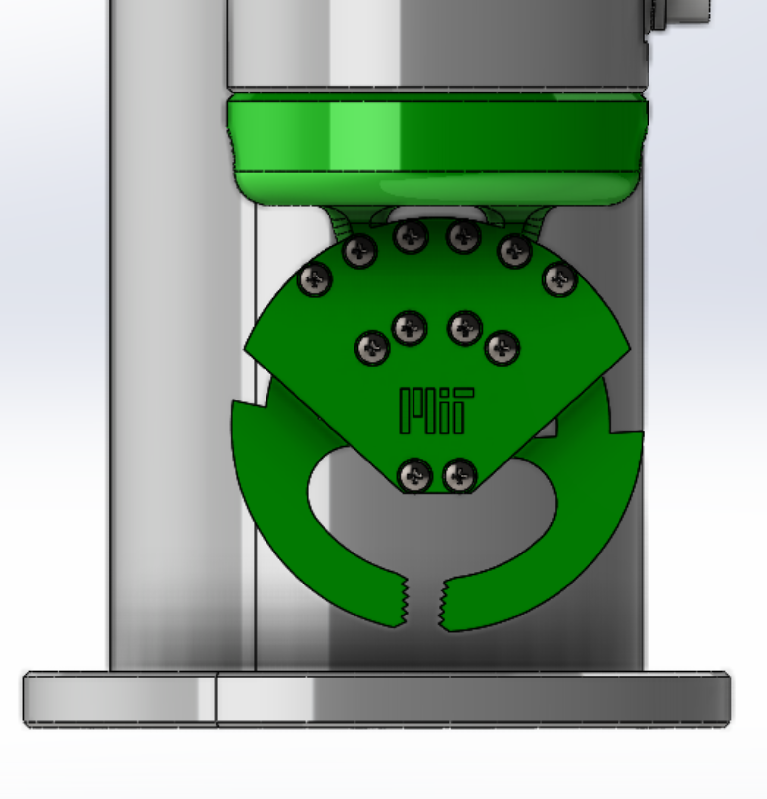
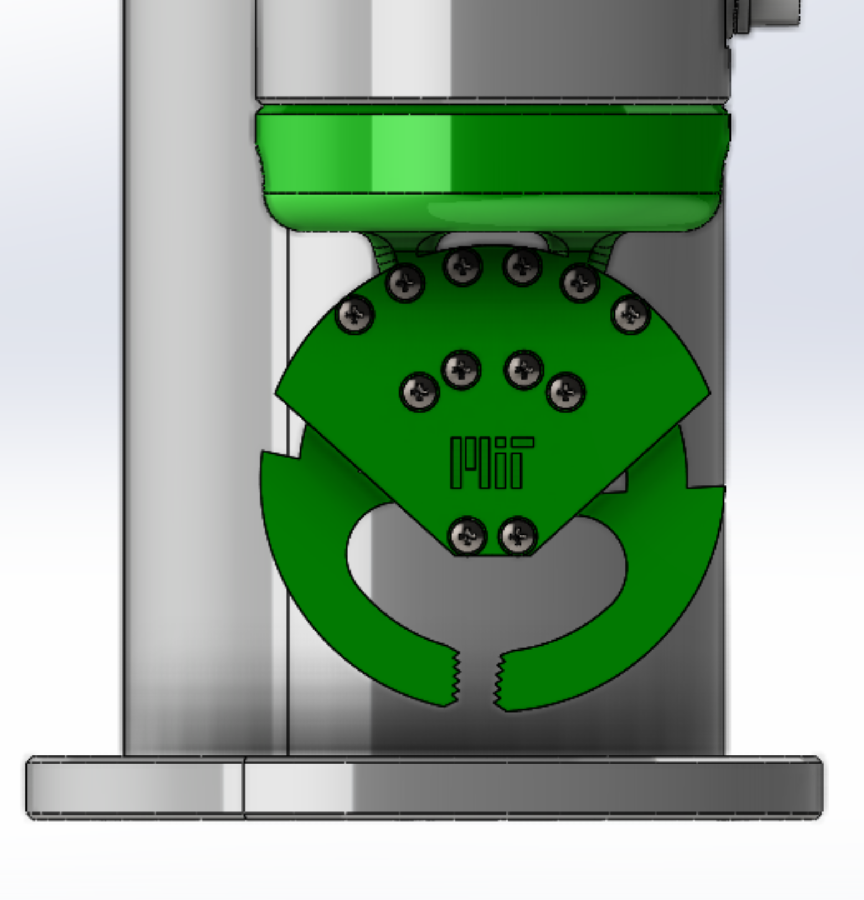
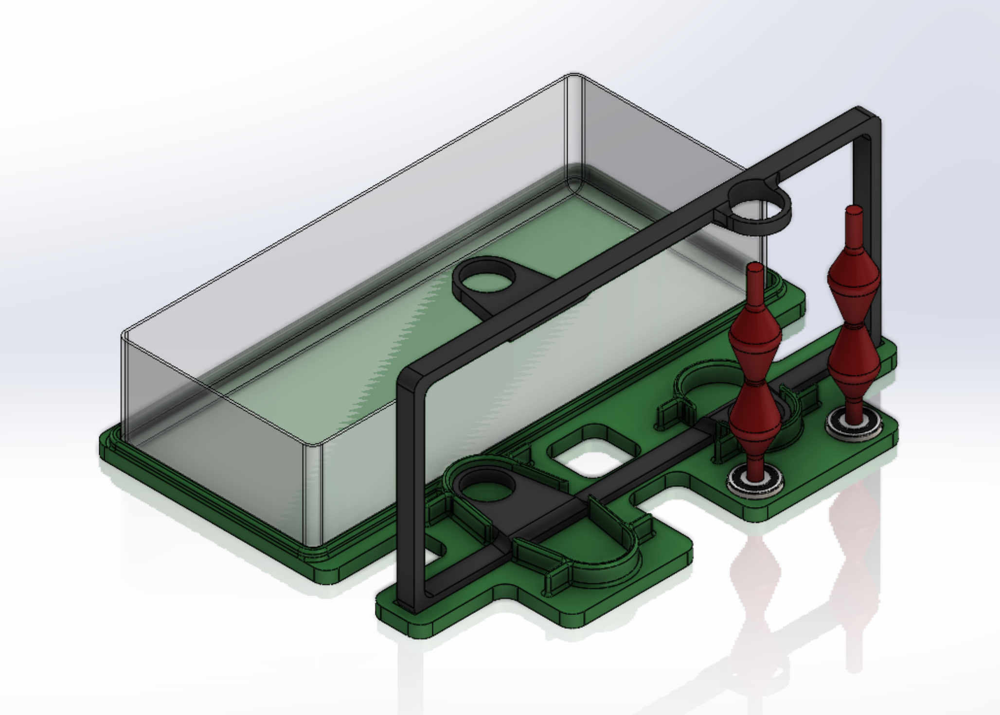
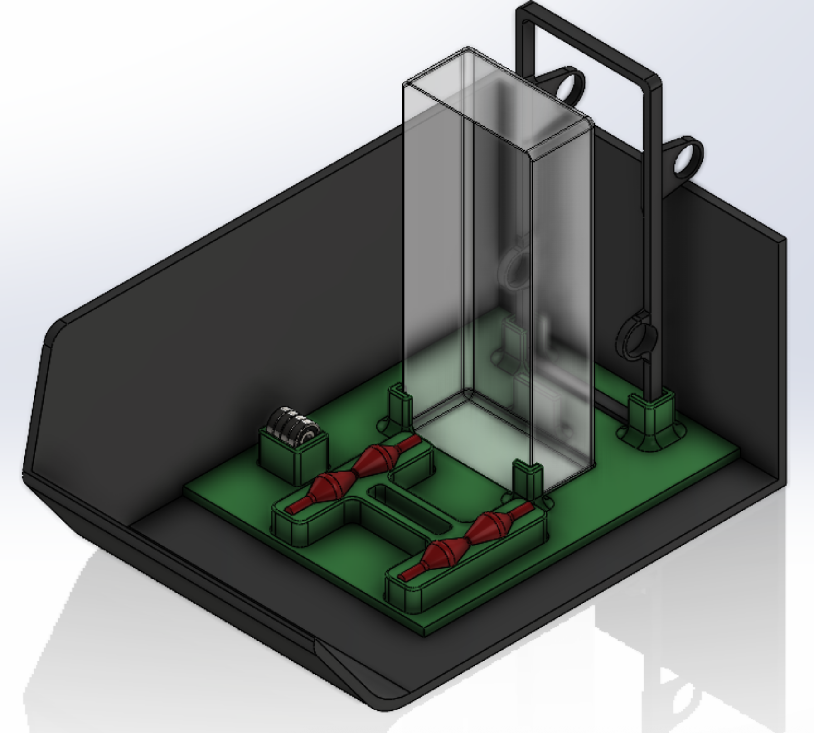
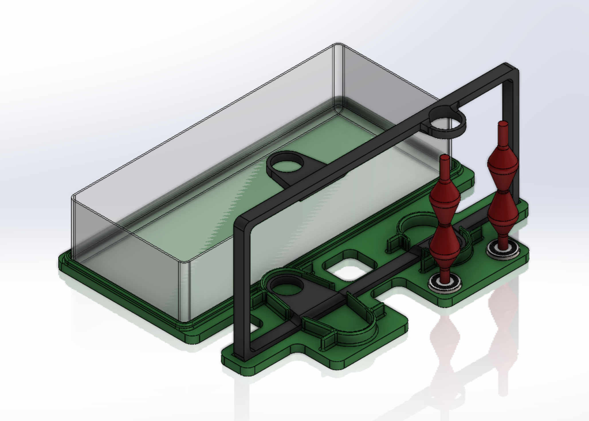
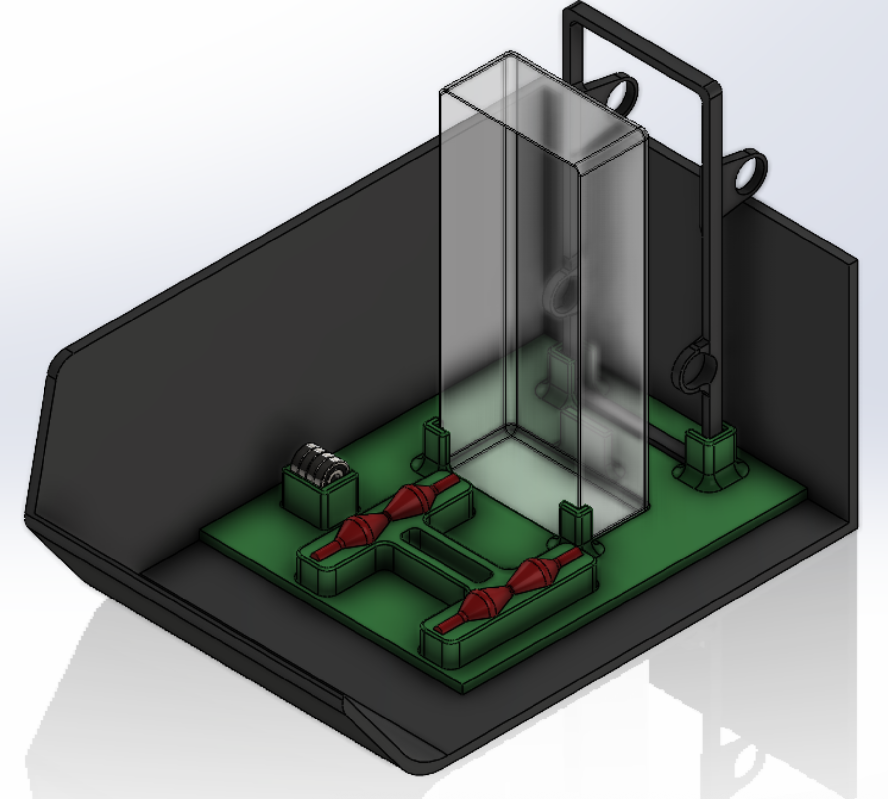

Cobots Assembly Line for Fiber Extrusion Device
Mechanical Designer & Fabricator
Designed and implemented a robotic subsystem for the cooling stage of a fiber extrusion device, as part of an MIT-linked academic initiative. Responsible for developing a 3D-printed pneumatic gripper, operator and robot fixtures, and integrating an artificial vision system.
Project emphasized collaboration, automation design, and real-world manufacturing education. View MIT collaboration
 

 


